P01 新建任务 页面整体
共用设置作用于全部已选账号；选择一个视频，预览随内容和展示方式变化。高级设置默认收起。
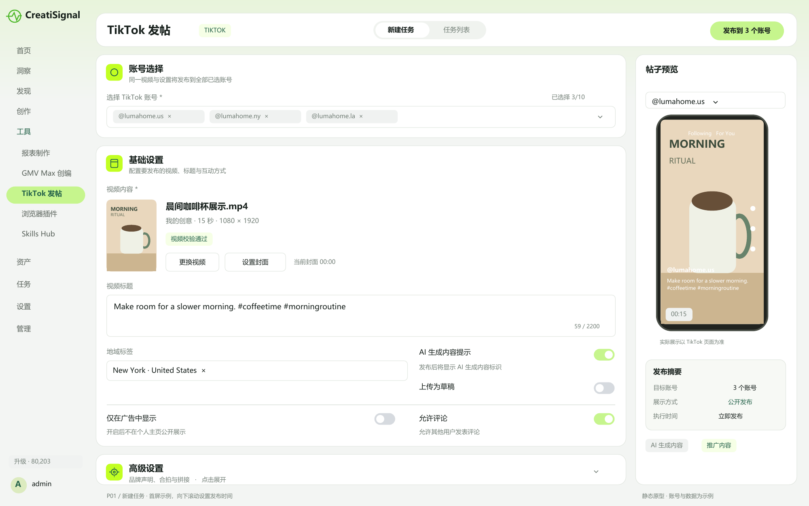
P02 选择视频 复用现有素材弹窗样式
三个来源为“我的创意 / 高保真复刻 / 本地上传”。单选成片；未完成的素材不能选。
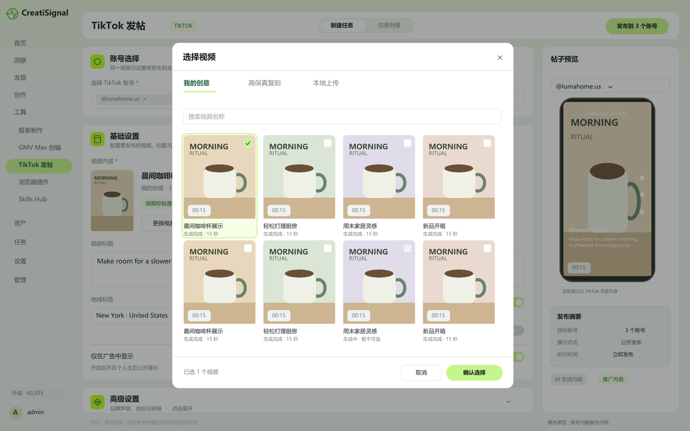
P03 选择账号 多选与权限提示
最多选择 10 个账号；不可用账号展示具体原因。已填写文案和视频不会因授权操作丢失。
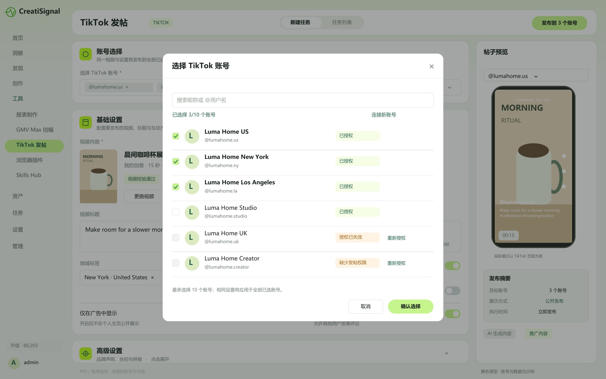
P04 视频标题 话题实时建议
按返回候选播放量降序展示，点击插入；展示的是话题累计播放量，不是预计视频播放量。
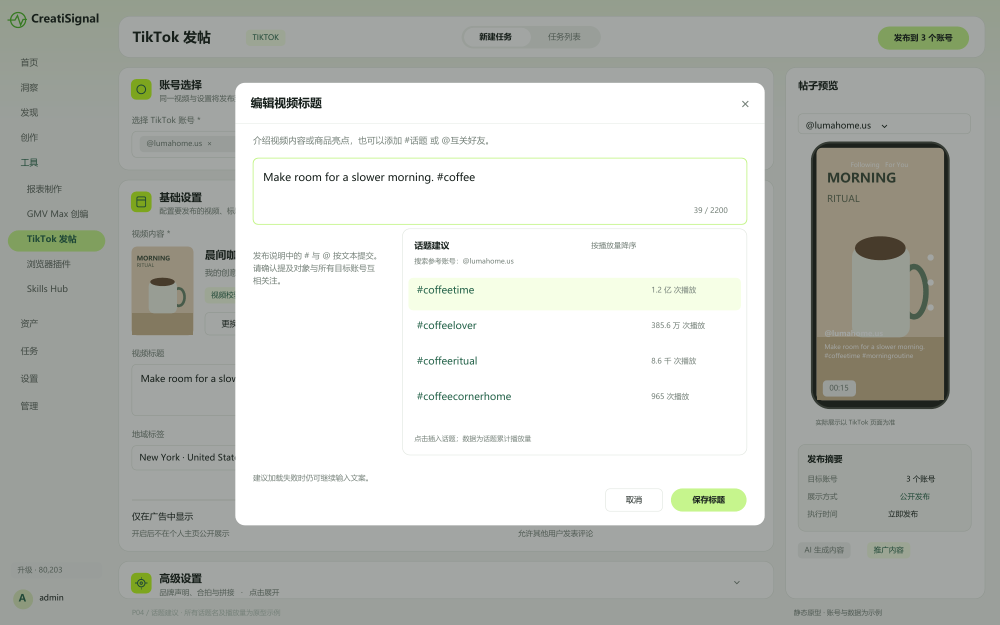
P05 地域标签 搜索与同名地点区分
地点名称下展示地址。多账号提交前逐账号确认所选地点可用，不能只按名称自动匹配。
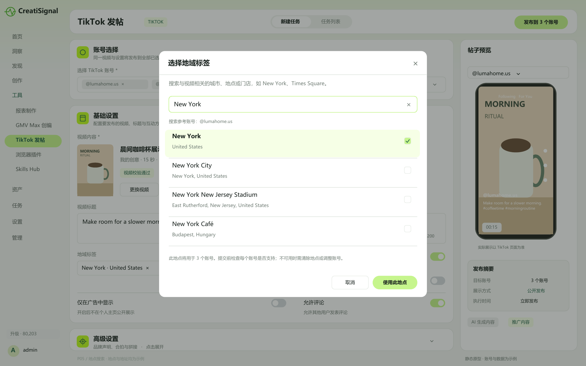
P06 高级设置与定时发布
保持原需求的开关分组及默认值。日期时间明确到秒，同时展示时区和计划动作。
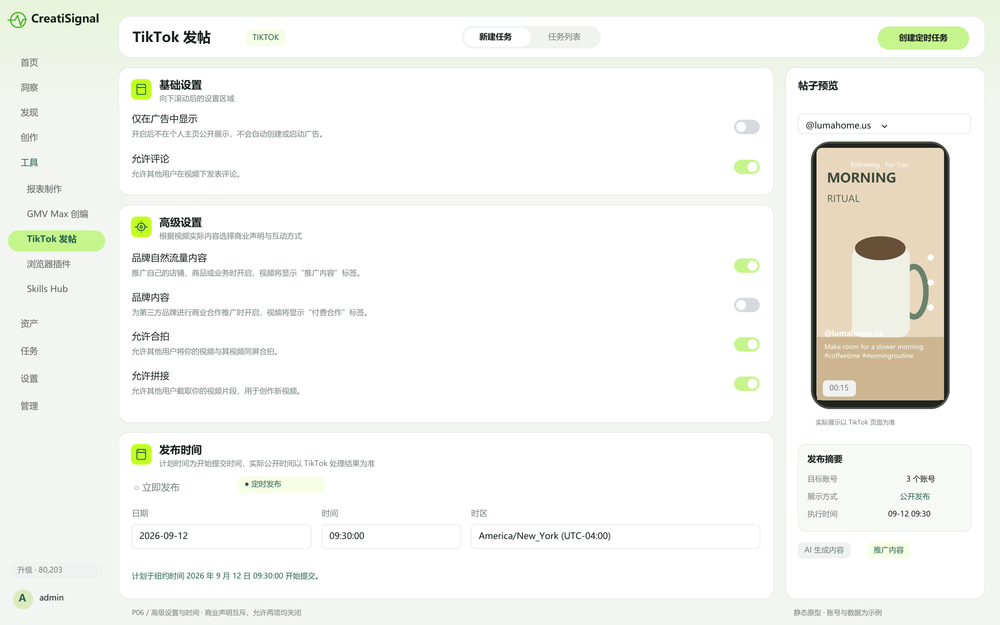
P07 草稿模式 失效字段与操作引导
草稿上传后仍需在 TikTok App 完成发布；文案等发布设置不会随草稿提交，不能显示成已公开发布。
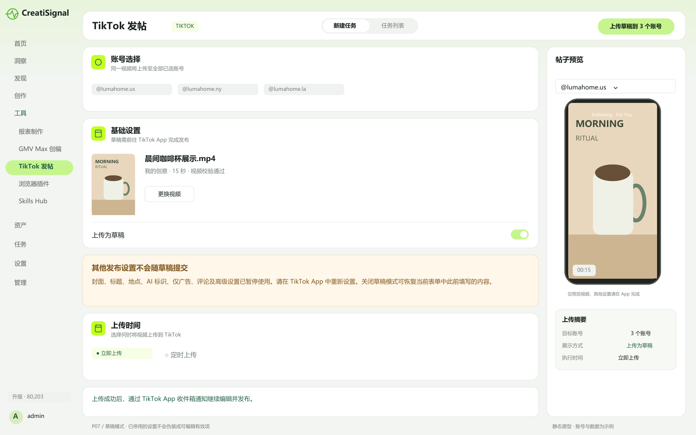
P08 任务列表 查看批次进度与执行结果
一行是一条视频的一次发布任务；同时展示目标模式、总体状态和账号结果计数。
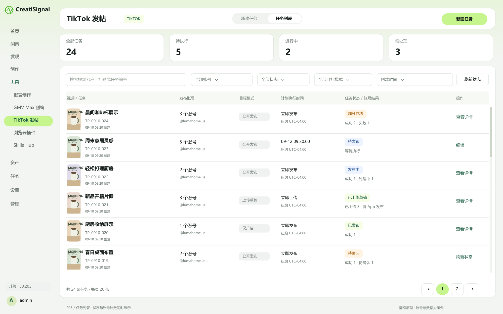
P09 任务详情 部分成功与失败恢复
账号级状态、原因及操作并列展示；重试失败项不会再次发布已成功账号。
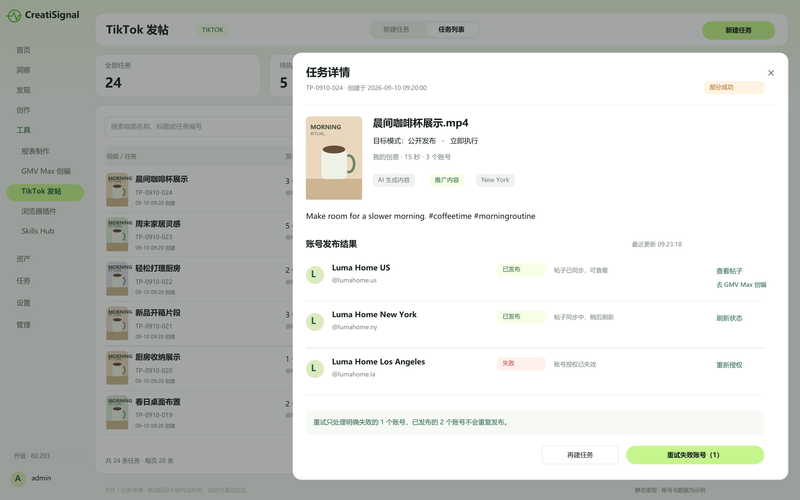
P10 任务详情 草稿上传完成
展示上传结果与 TikTok App 操作说明；不提供未经验证的帖子链接或 GMV Max 创编入口。
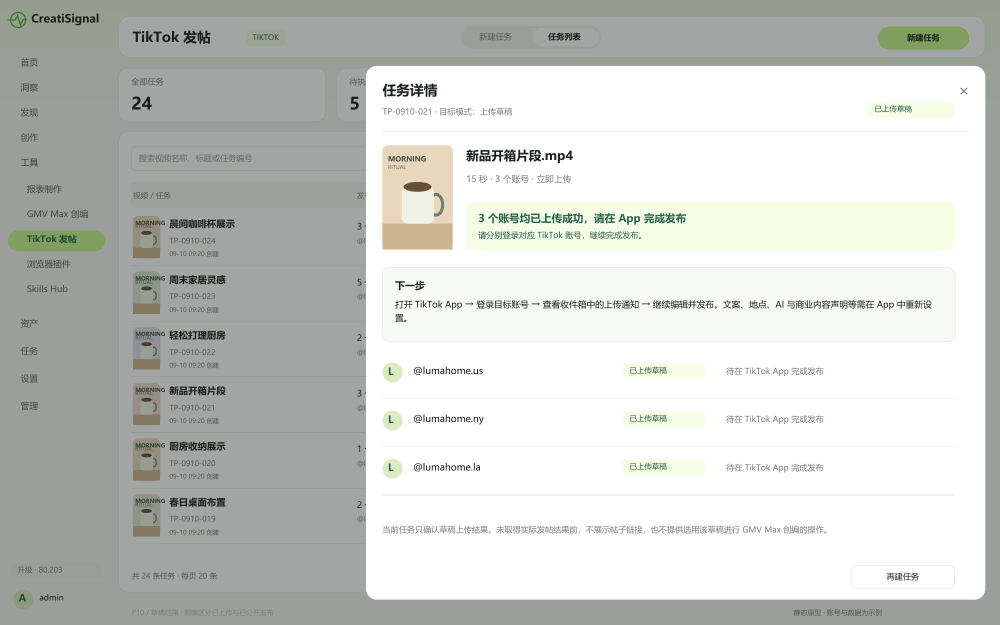
P11 GMV Max 创编 从 TikTok 直发帖选用
复用现有素材选择弹窗。账号发帖成功、帖子同步完成和 GMV Max 可用资格是三个独立条件。
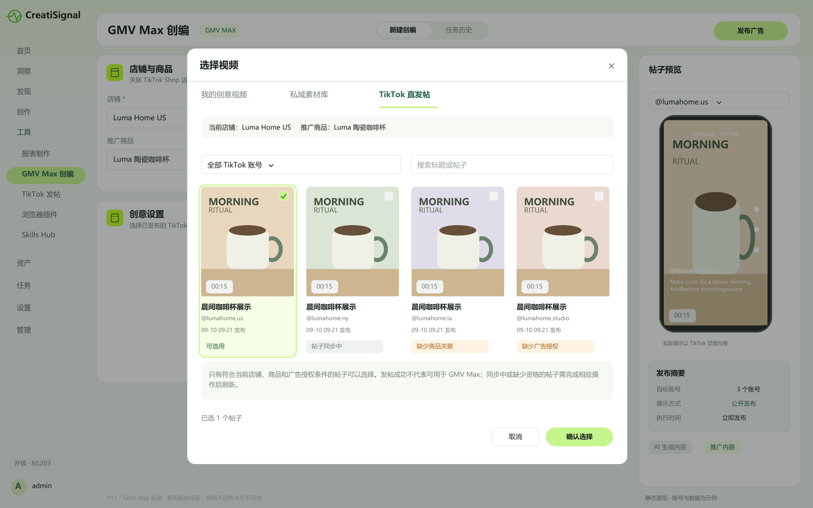